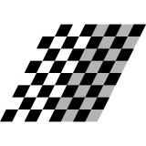

Affine Transforms¶
Affine transformations allows us to use simple systems of linear equations to manipulate any point or set of points. It allows us to move, stretch, or even rotate a point or set of points. In the case of GIS, it is used to distort raster data, for instance satellite imagery, to fit a new projection or CRS.

Fig. 16 Example of a warped (reprojected) image¶
First some general properties of affine transforms:
Preserves
Points, straight linear & planes
Sets of parallel lines
Ratio of distances between points on same straight line
Distorts
Angle between lines
Distance between points
Types of Transformations¶
There are four core ways that you can manipulate an image. These are called “Transforms”:
Transform |
Description |
Example |
|---|---|---|
Translation |
Moves a set of points some fixed distance in the x and y plane |
|
Scale |
Increases or decreases the scale, or distance between points in the x and y plane |
|
Rotate |
Rotates points around the origin, or some defined axis |
|
Shear |
Shifts points in proportion to any given points x and y coordinate |
 |


Image Credit: Wikipedia
In combination we can warp any point, or set of points (e.g. raster image) into a new projection. This is the equivalent of reprojection for vector data. In order to implement these transforms we will need to learn about the math behind Affine Transforms! Yeah!
Simple Transform Examples¶
To simplify things first lets think about how to do transformations of a single point in a 2d space.
For any location \( \mathbf{x} = (x,y)\) we can transform \( \mathbf{x} \) to \(\mathbf{\acute{x}}\) using simple linear adjustments. Here we can think of point \(\mathbf{x}\) as being stored as an array:
From here we can transform the values in the \(x\) and \(y\) position using scaler values \(a\) through \(f\):
Note
Looking at the formula above, we are adjusting the value of \(x\) with \(ax+by+c\), so \(x\) can be multiplied (scaled) by some value \(a\), it can also be scaled based on the \(y\) value with \(+ by\), or simply adjusted up or down by the value \(+ c\)
To understand how this works, let’s walk through the basic transformations of \(\mathbf{x}\):
If we multiply \(x\) and \(y\) by one, by setting \(a,e = 1\), and zero out the effect of the other axis, by setting \(b,d = 0\), we have a simple case of translation, where \(x\) moves right by \(c\) and \(y\) up by the value of \(f\):

Fig. 17 Translate a coordinate¶
We can scale \(x\) and \(y\) by using \(a\) and \(e\) and setting all other values to zero (\(b,d,c,f = 0\)):
Fig. 18 Scale a coordinate¶
We can rotate a point around the origin by setting \(a,e = \cos\theta\), \(b = -\sin\theta\) and \(c,f = 0\):
where \(\theta\) is the angle of rotation (counterclockwise) around the origin.
Fig. 19 Rotate a coordinate¶
Finally by adjusting \(x\) based on the value of \(y\) (and visa versa), we can achieve a shear transform:

Fig. 20 Shear transform a coordinate¶
Transforming Matrices¶
It is often convenient to represent these equations as matrices. This allows us to easily chain together a series of operations. We can represent our transformed point \(\mathbf{\acute{x}}\) as follows:
Note
If you aren’t familiar with how matrix multiplication works please watch this.
In this new context we can easily do a scale, rotate or shear transform by replacing the matrix of \(a,b,d,e\) with:
But wait, what about the easiest transform, “translation”? Unfortunately that makes things a little more complicated! But not that complicated.
In order to be able to perform a translate in matrix form we need to extend our matrices, adding one row along the bottom. In the following form we can now perform all the basic transformations to calculate \( \mathbf{\acute{x}}\):
Now that we have scalers \(c\) and \(f\) all the transforms are possible. We do however, need to update our previous operations:
Where \(\Delta x\) shifts in the \(x\) axis and \(\Delta y\) determines the shift in the \(y\) axis.
Numeric Examples¶
Translate¶
Now let’s assume we have a point a at (-2,-2) for (x,y). For simplicity sake lets assume we want to move it up to the origin by adding 2 to both x and y.
Let’s start by defining our point in our matrix form:
Let’s get our transform matrix \(M\) to perform our translate, where \(\Delta x, \Delta y = 2\) because we want to move it up and to the right:
We can then multiply the two:
Congrats you reached (0,0), just like you always dreamed!

Fig. 21 Moving a point¶
Note
Remember the bottom row can be ignored because \( \begin{bmatrix} x \\ y \\ 1 \end{bmatrix}\)
Rotate¶
All the transformations follow the same procedure, let’s try rotation just to make sure that we have it figured out. Let’s rotate our point at (-2,-2) by 180 degrees around the origin:

Fig. 22 Rotate a point¶